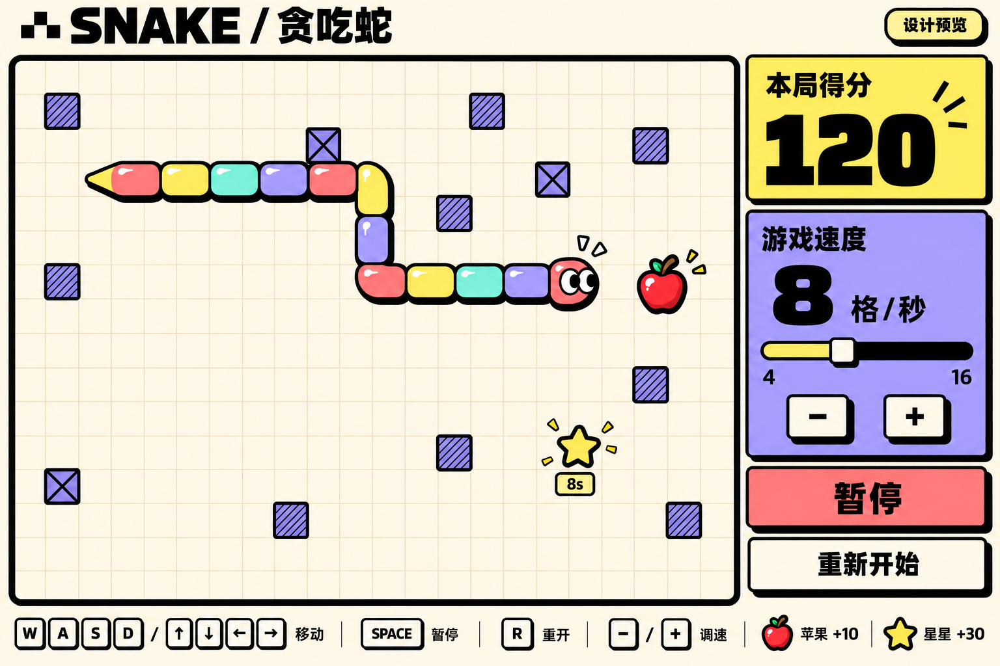
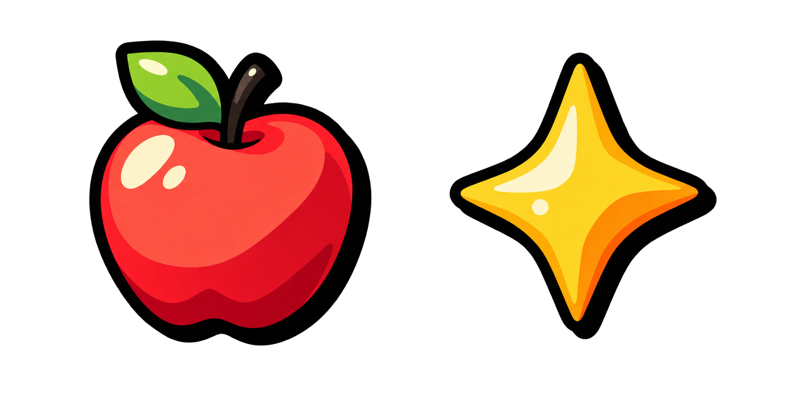

粗线条，彩色蛇，
简单但有手感。
奶油白纸面、黑色硬阴影和高饱和撞色。蛇身分节交替上色，搭配糖果高光、朝向眼睛和吃到奖励时的局部弹跳反馈。
- 经典玩法：方向键 / WASD 移动，撞墙、障碍或身体结束。
- 随机棋盘：24 × 18 格，每局 12 个固定随机障碍。
- 奖励：苹果 +10 并增长；每吃 5 个苹果出现星星，8 秒内吃到 +30。
- 调速：4–16 格/秒，默认 8；滑块与 − / + 快捷键同步。
Enter 开始 Space 暂停 / 继续 R 重开
奖励素材样稿

苹果与星星已生成，正式接入时分别整理尺寸并检查小尺寸可读性。蛇身由程序绘制，确保转弯和增长时连续。
反馈动效规划：吃奖励时短促缩放与加分提示；暂停冻结计时；开启减少动态效果时取消装饰动画。
已预留 Seedance 片头与获胜短片提示词。视频为可选素材，首版游戏无需等待视频生成。
OpenSpec change：add-neobrutalist-snake。当前交付为规划与静态评审附件，游戏代码尚未实现。